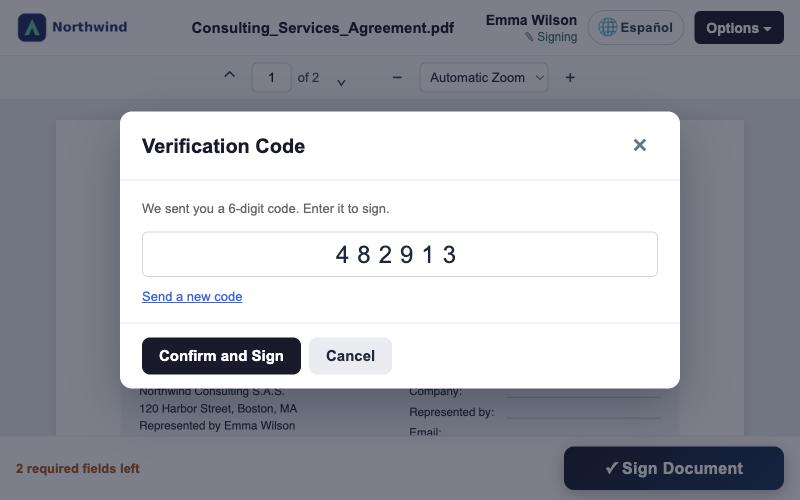

Verify signers
with a code by SMS
Before signing, each signer types a one-time code sent to their mobile phone. It adds a second factor to the email link and records the verification in the audit trail.
Odoo 20 · Community & EnterpriseAdd-on for Angels SignUses Odoo SMS credits
